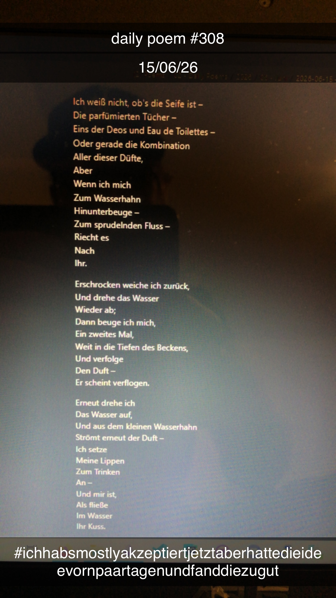

Ihr Duft / Ihr Kuss
Ich weiß nicht, ob's die Seife ist –
Die parfümierten Tücher –
Eins der Deos und Eau de Toilettes –
Oder gerade die Kombination
Aller dieser Düfte,
Aber
Wenn ich mich
Zum Wasserhahn
Hinunterbeuge –
Zum sprudelnden Fluss –
Riecht es
Nach
Ihr.
Erschrocken weiche ich zurück,
Und drehe das Wasser
Wieder ab;
Dann beuge ich mich,
Ein zweites Mal,
Weit in die Tiefen des Beckens,
Und verfolge
Den Duft –
Er scheint verflogen.
Erneut drehe ich
Das Wasser auf,
Und aus dem kleinen Wasserhahn
Strömt erneut der Duft –
Ich setze
Meine Lippen
Zum Trinken
An –
Und mir ist,
Als fließe
Im Wasser
Ihr Kuss.
